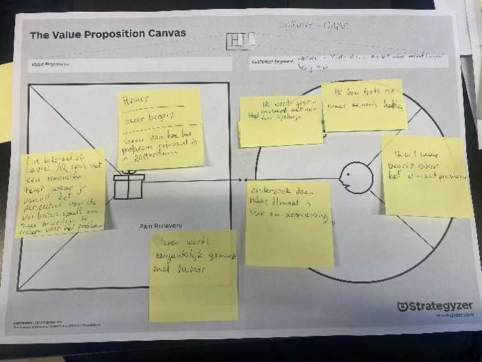
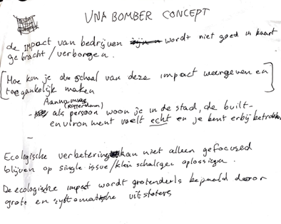
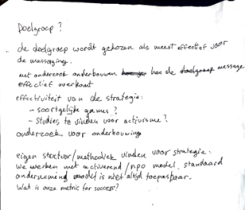
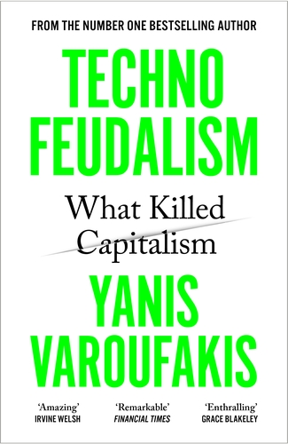

Betrokken aanpak
Wat is het?
Opzoek naar kansen
Waarde maken voor de stakeholders
Valideer aannames
Mijn aanpak
Ondernemende aanpak
Wat is het?
Maatschappelijke impact makenVervulling van de behoeftes van de stakeholders
Mijn aanpak
 
Eigen ontwerpproces ingezet:
Probleemstelling
1. Ecologische verbetring kan niet alleen gefocused blijven op single issue/kleinschalige
oplossingen
2. De ecologische impact wordt grotendeels bepaald door grote en systematische uitstoters
3. De impact van bedrijven wordt niet goed in kaart gebracht/verborgen
Onderzoeksvraag:
Hoe kun je de schaal van deze impact weergeven en toegankelijk maken
Boek: Technofeudalism
auteur: Yanis Varouvakis

Onderneming gebeurt in de gestructureerde omgeving van de markt
Economie beschrijft de sociale relaties van de samenleving
Wat als er een breuk komt in die structuur?
Welke veranderingen in zijn relatie met de samenleving moet de mensheid begaan om om te kunnen gaan met
een
geëvolueerde kapitalisme
Reflectie
Terugblik naar de vorige doelen
1. Ik ga in de toekomst mijn ontwerpproces gestructureerd aanpakken en de sprintdagen volgen
2. Ik wil met een open mind kunnen designen en ik ga alternatieve onderzoeksmethodes inzetten om mijn
ontwerpproces te ondersteunen
Ik vind dat een ontwerper altijd betrokken moet zijn bij de maatschappij. De waardepropositie voor de
maatschappij zou vooraan moeten staan.
Een vorm van betrokken aanpak moet in elk ontwerpproces aanwezig zijn
Persoonlijke doel:
Zorg dat een betrokken aanpak minstens een gedeelte van toekomstige ontwerpprocessen wordt.